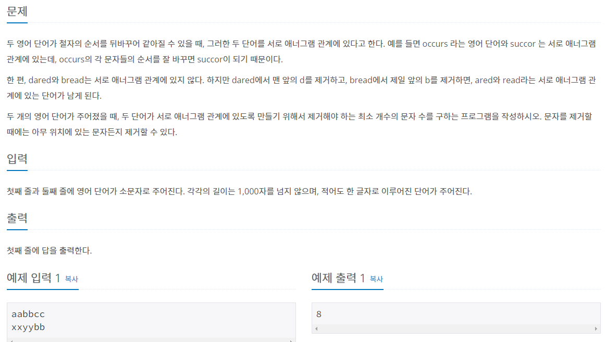

#INFO
난이도 : BRONZE2
출처 : 1919번: 애너그램 만들기 (acmicpc.net)

#SOLVE
애너그램 관계란 두 영어 단어의 철자를 바꾸어 같아지는 경우를 의미한다. 즉, 애너그램 관계가 되기 위해선 두 단어는 알파벳의 순서만 다를 뿐 알파벳의 종류와 수는 모두 동일해야 한다.
풀이는 간단하다. 첫 번째 단어의 알파벳 개수를 저장할 alpha1 배열과 두 번째 단어의 알파벳 개수를 저장할 alpha2 배열을 선언하여 각 단어의 철자의 수를 배열에 저장한다.
int alpha1[26] = {0, };
int alpha2[26] = {0, };
int main() {
string str1 = "";
string str2 = "";
cin >> str1;
cin >> str2;
for (int i = 0 ; i < str1.length() ; i++) {
alpha1[str1[i]-97]++;
}
for (int i = 0 ; i < str2.length() ; i++) {
alpha2[str2[i]-97]++;
}
}
다음으로 alpha1 배열과 alpha2 배열을 비교하여 알파벳의 개수가 다르다면 차이의 절댓값을 정답에 더해 준뒤 , 출력해 주면 된다.
for (int i = 0 ; i < 26 ; i++) {
if (alpha1[i] != alpha2[i])
res += abs(alpha1[i] - alpha2[i]);
}
cout << res << endl;#CODE
#include <iostream>
#include <cstdlib>
#include <string>
using namespace std;
int alpha1[26] = {0, };
int alpha2[26] = {0, };
int main() {
string str1 = "";
string str2 = "";
cin >> str1;
cin >> str2;
int res = 0;
for (int i = 0 ; i < str1.length() ; i++) {
alpha1[str1[i]-97]++;
}
for (int i = 0 ; i < str2.length() ; i++) {
alpha2[str2[i]-97]++;
}
for (int i = 0 ; i < 26 ; i++) {
if (alpha1[i] != alpha2[i])
res += abs(alpha1[i] - alpha2[i]);
}
cout << res << endl;
return 0;
}